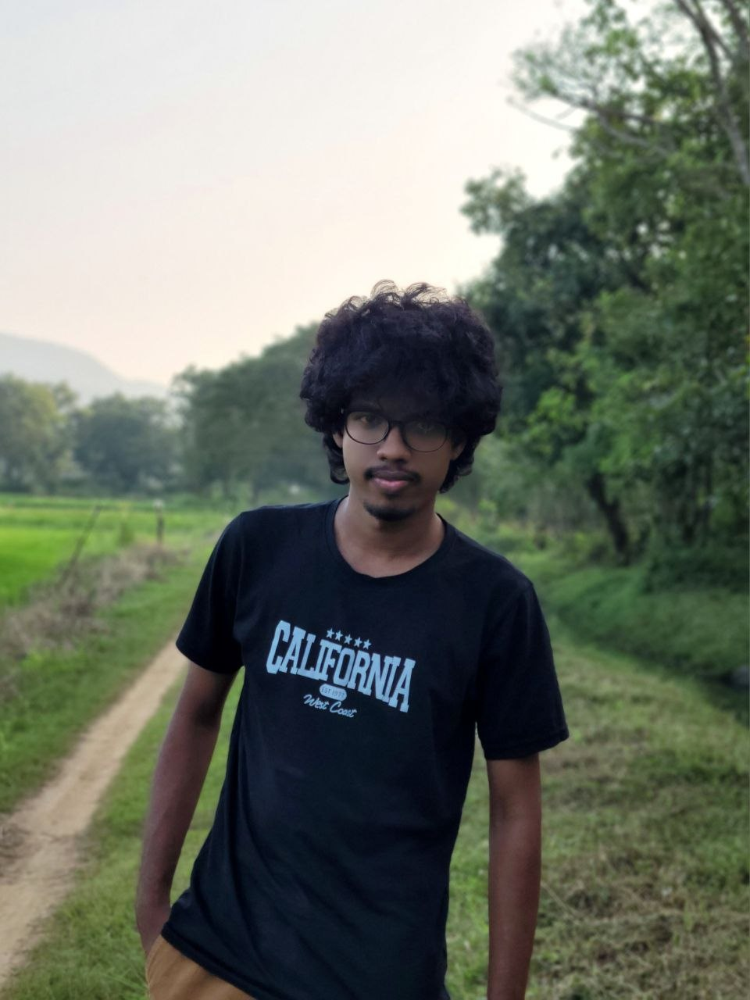

01 / CODE
Programming
Writing code, solving problems and growing my foundations with Python, C and C++.
PORTFOLIO / SRI LANKA
BICT Hons Undergraduate | Python | C/C++ | Web Dev | Music Production Enthusiast
Building a future where code, connected ideas and creativity work together.

A LITTLE CONTEXT
1st Year Undergraduate at Rajarata University of Sri Lanka, Faculty of Technology. Aspiring developer & tech enthusiast passionate about building real-world solutions with code, IoT, and creative design.
FOUR WAYS I LIKE TO CREATE
A mix of software, connected technology and creative expression — always learning, always experimenting.
Writing code, solving problems and growing my foundations with Python, C and C++.
Exploring the web — building interfaces and sharing projects through GitHub.
Interested in IT, IoT and AI tools that can turn practical ideas into real-world solutions.
Making space for creativity with solo guitar, keyboard and music production.
TOOLS IN THE MIX
A growing toolkit across technology and music. These are the areas I’m exploring and developing.
CURRENTLY EXPLORING
A few directions I’m building toward. I’m early in the journey, and this portfolio will grow as I ship projects.
01 learn("by building")
02 solve(real_problems)
03 repeat()▍
* These cards describe current learning directions, not completed client projects.
GUITAR · KEYS · PRODUCTION
For music bookings, collaborations or a creative project, drop me a message on WhatsApp.
Book / message on WhatsAppHAVE AN IDEA?
For projects, collaborations, music bookings or a friendly hello — reach out through any of these channels.
CALL / WHATSAPP+94 78 101 7643